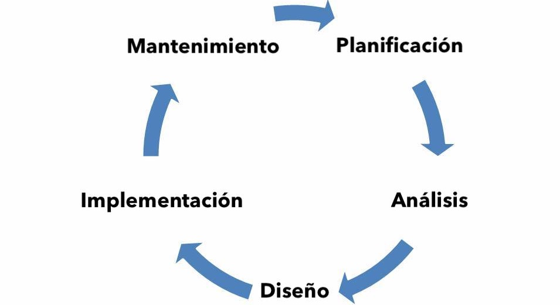

Ian García González
A01706892 | Ingeniero en Tecnologías Computacionales Incoming FBU Intern at
üíª Made with WebStorm, TailwindCSS, TypeScript. üë®ü誂Äçüíª
Preguntas
¿Cuál es la diferencia entre Internet y la World Wide Web?
El internet es la red de computadoras que existen alrededor del mundo que se encuentran conectadas entre sí, mientras que la Word Wide Web es la colección de páginas web que están dentro de la red de computadoras.
¿Cuáles son las partes de un URL?
Dentro de un URL se encuentra el protocolo, subdominio, dominio, ruta y parámetros.
¿Cuál es el propósito de los métodos HTTP: GET, HEAD, POST, PUT, PATCH, DELETE?
GET: Solicitar datos de un recurso en específico. HEAD: Obtener los datos del header de algún endpoint. POST: Enviar datos para la creación de algún recurso. PUT: Actualizar algún recurso en particular. PATCH: Actualizar un recurso de forma parcial.DELETE: Elimina un recurso.
¿Qué método HTTP se debe utilizar al enviar un formulario HTML, por ejemplo cuando ingresas tu usuario y contraseña en algún sitio? ¿Por qué?
Se debe de utilizar un método POST, ya que los datos que se envían son sensibles y no deben de ser visibles (como en el método GET).
¿Qué método HTTP se utiliza cuando a través de un navegador web se accede a una página a través de un URL?
Se utiliza un método GET, para poder solicitar al servidor el contenido de la página.
Un servidor web devuelve una respuesta HTTP con código 200. ¿Qué significa esto? ¿Ocurrió algún error?
Significa que la solicitud fué exitosa, sin error alguno.
¿Es responsabilidad del desarrollador corregir un sitio web si un usuario reporta que intentó acceder al sitio y se encontró con un error 404? ¿Por qué?
Dependiendo del contexto sí será responsabilidad del desarrollador atender el error 404, debido a que muchas veces los sitios web cuentan con vistas dinámicas. No obstante, si el usuario ingreso a una sección que no existe, no será responsabilidad del desarrollador atender este error.
¿Es responsabilidad del desarrollador corregir un sitio web si un usuario reporta que intentó acceder al sitio y se encontró con un error 500? ¿Por qué?
Sí, debido a que los errores 5xx significa que hubo algún error crítico del lado del servidor, por lo que el desarrollador debe solucionarlo.
¿Qué significa que un atributo HTML5 esté depreciado o desaprobado (deprecated)? Menciona algunos elementos de HTML 4 que en HTML5 estén desaprobados.
Que un elemento atributo del HTML está en desuso por lo que ha quedado obsoleto por nuevas construcciones. Por ejemplo: link, align, background, etc.
¿Cuáles son las diferencias principales entre HTML 4 y HTML5?
En HTML4 todo está mezclado, existen menos funciones y etiquetas, mientras que en HTML5 la estructura esta dividida por la semántica de la página.
¿Qué componentes de estructura y estilo tiene una tabla?
Una tabla se conforma de 3 diferentes secciones, el encabezado thead, el cuerpo tbody, así como el footer tfoot. Dentro de los cuales se encuentran los tags tr y td para definir filas y celdas.
¿Cuáles son los principales controles de una forma HTML5?
Los elementos principales son form, label, input, select, option, button, radio, checkbox, etc.
¿Qué tanto soporte HTML5 tiene el navegador que utilizas?
Utilizando Safari 15.3 en MacOS Monterey 12.2.1: 469/555 pts.
Utilizando Chrome 98 en
MacOS Monterey 12.2.1: 479/555 pts.
Sobre el ciclo de vida y desarrollo de los sistemas de información:
¿Cuál es el ciclo de vida de los sistemas de información?
¿Cuál es el ciclo de desarrollo de sistemas de información?